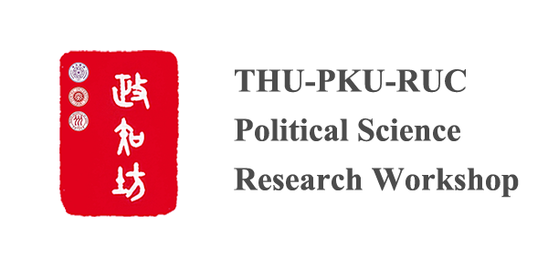
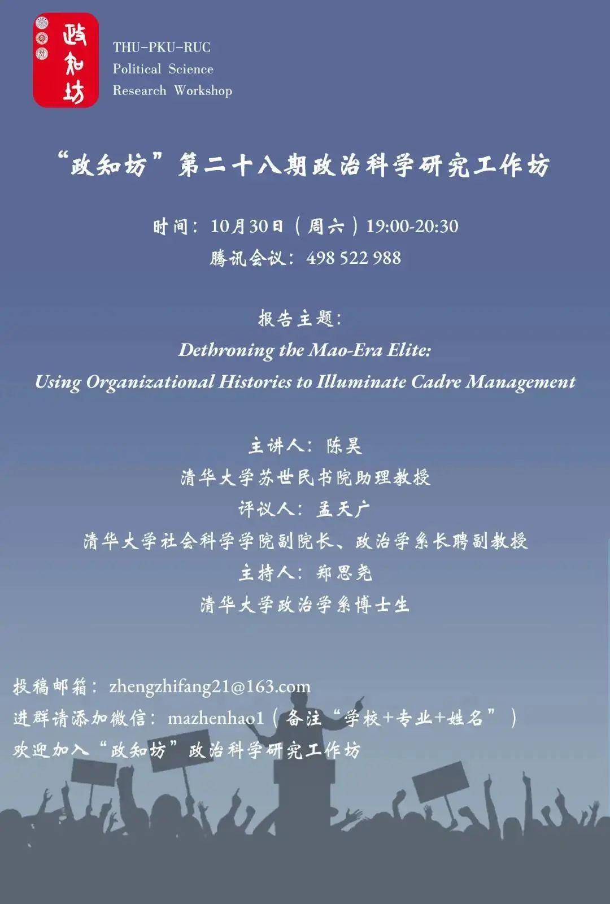

会议预告｜“政知坊”第二十八期政治科学研究工作坊
收录于合集

为增强政治学专业博士生和高年级硕士生的学科素养和学术交流，由清华大学政治学系发起，清华大学政治系、北京大学政治系和中国人民大学政治系联合主办“政知坊”三校政治科学研究工作坊，定期举办政治科学实证研究的学术分享和讨论活动。
从2018年至今，“政知坊”顺利举办过二十七次工作坊会议，不少主讲者已将讲演论文发表于Political Psychology，Journal of Contemporary China和《公共行政评论》等SSCI和CSSCI重量级学术刊物中。
鉴于新冠疫情还未完全遏止，经“政知坊”政治科学研究工作坊执行委员会讨论决定，2021-2022年秋季学期的工作坊学术分享和讨论会将采取线上会议的形式进行。
“政知坊”的服务对象包括但不限于国内社会科学领域的在读博士生和高年级硕士生。工作坊主要采取文章现场讲演加论文专业点评的形式，其特点在于跨学校和跨学科的互动交流，并以提升参与者的学术鉴赏水平和推动讲演者的学术成果发表为目的。
具言之，其一，基于开放性的报名渠道和合理化的论文筛选过程，每期的工作坊会围绕一至两个主题邀请两至三位博士生或高年级硕士生在十五分钟内展示其论文框架，帮助提高汇报人的学术表达能力。
其二，每期的工作坊会议都会邀请相关领域内的专家学者对汇报人的论文进行点评，专家会提出具有针对性的学术建议和修改意见，帮助研究者完善研究思路，增加论文发表的可能性。
其三，“政知坊”鼓励跨学校和跨学科的互动和交流，不同学校和不同专业领域的参与者可以在工作坊会议上进行交叉学科问题的讨论，建立学术合作的网络关系，并在未来形成创新性的研究成果。
“政知坊”的受众群体广泛，参与人群并不仅仅限于清、北、人三校师生，我们诚挚欢迎和鼓励不同学校和不同专业背景的同学通过文章投稿、论文主讲和参会互动的形式参与到每期的工作坊会议当中来！

报告主题
Dethroning the Mao-Era Elite: Using Organizational Histories to Illuminate Cadre Management
主讲人
陈昊 清华大学苏世民书院助理教授
主持人
郑思尧 清华大学政治学系博士生
点评人
孟天广
清华大学社会科学学院副院长、政治学系长聘副教授
会议安排
2021年10月30日（周六）
19:00-20:30
腾讯会议：498 522 988
参与须知
1、请您遵守会议秩序。提前进入腾讯会议，入会后请保持静音。
2、请您提前查看演讲人的ppt。如有可能，请您事先准备至少一个相关问题或其他专业问题。我们期待您能从本次会议中得到收获。
3、鼓励跨学校和跨学科交流。在观众互动环节中，我们鼓励您能将研究方向和近期在研问题发在聊天面板上。
征稿议题
工作坊征集的论文包括但不限于以下议题：
比较政治
政治心理和行为、政治传播、协商民主
当代中国政治
政府行为、官员行为、数字和信息政治、政商关系、央地关系
研究方法
大数据政治学、实验政治学、比较历史分析
论文投稿
1、鼓励博士生和高年级硕士生进行投稿，同时欢迎中青年学者自荐担任点评人。
2、论文提交形式为论文全文或proposal的形式。工作坊鼓励博士生或高年级硕士生将未定稿的论文进行交流。其中，未定稿的论文和proposal至少需要包含以下内容：题目、中英文摘要（500字左右）、关键词（3-5个）、作者简介（包括学校单位、学位等；多个作者，请分别介绍）、作者联系方式（微信号及手机号码）。
3、需提前至少三天向工作坊提交展示的PPT。PPT应至少包括以下三个部分：理论介绍（文献综述）—研究方法—初步结论。
4、论文以电子版提交。请您发至电子邮箱zzfsocialscience@163.com，邮件标题请以“政知坊-姓名-论文题目”的形式进行标注。
5、论文需遵循学术规范。同时，展示论文需尚未在国内外公开发表过。
6、工作坊常年征集相关论文。经审核通过的论文将会安排在下次会议进行展示。若投稿论文较多，将会视具体情况进行调整。
指导老师
孟天广
清华大学社会科学学院副院长 长聘副教授 博士生导师
严 洁
北京大学政府管理学院政治系系主任 教授 博士生导师
韩冬临
中国人民大学国际关系学院 教授 博士生导师
联系方式
投稿邮箱：zhengzhifang21@163.com
“政知坊”会议联系群（进群请备注“学校+专业+姓名”）
（若群人数已满，请添加工作人员马振昊同学微信mazhenhao1）
媒体支持
“政治学评介”公众号
“政治学人”公众号
“政文观止Poliview”公众号
“Computational Social Science”公众号
*以上排名不分先后顺序
“政知坊”政治科学研究工作坊执行委员会
二零二一年十月二十九日